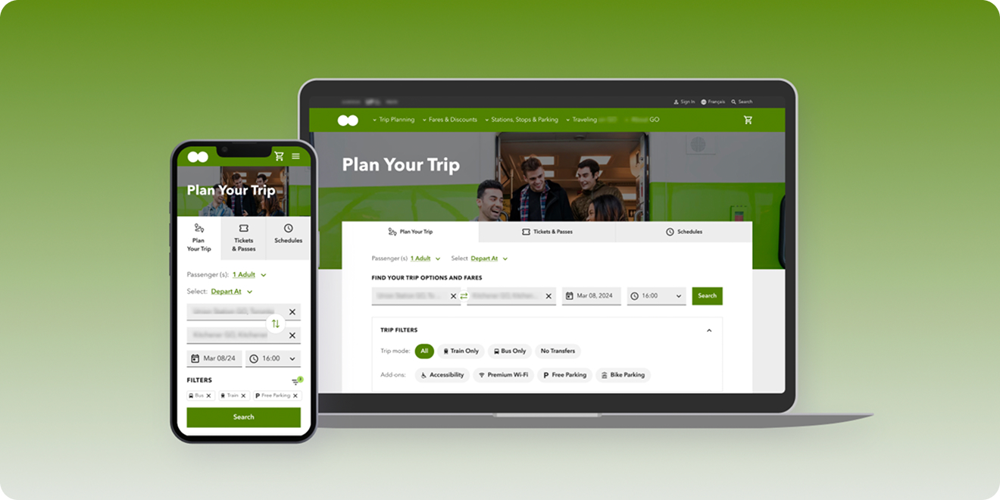
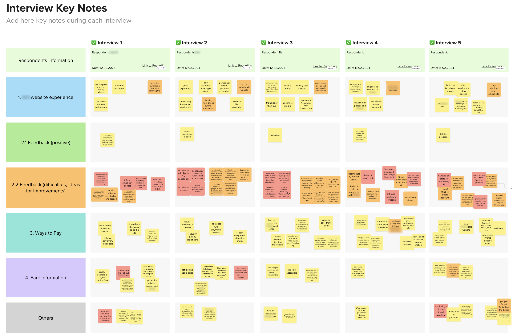
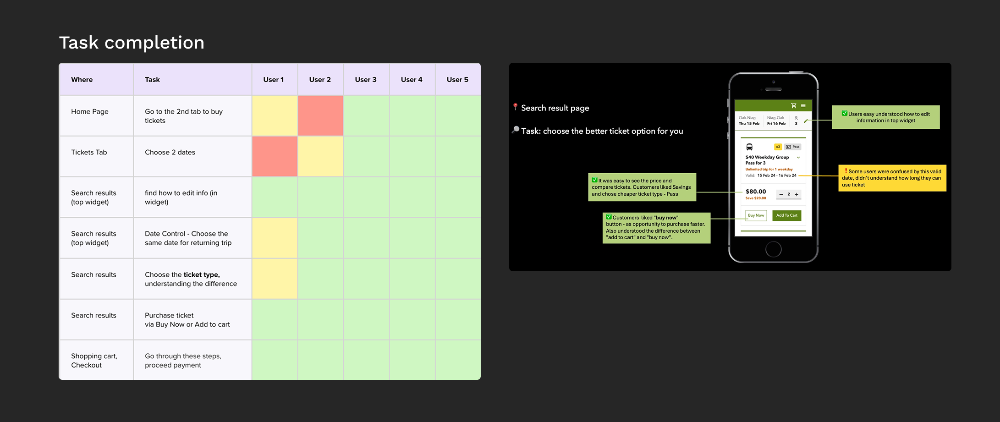
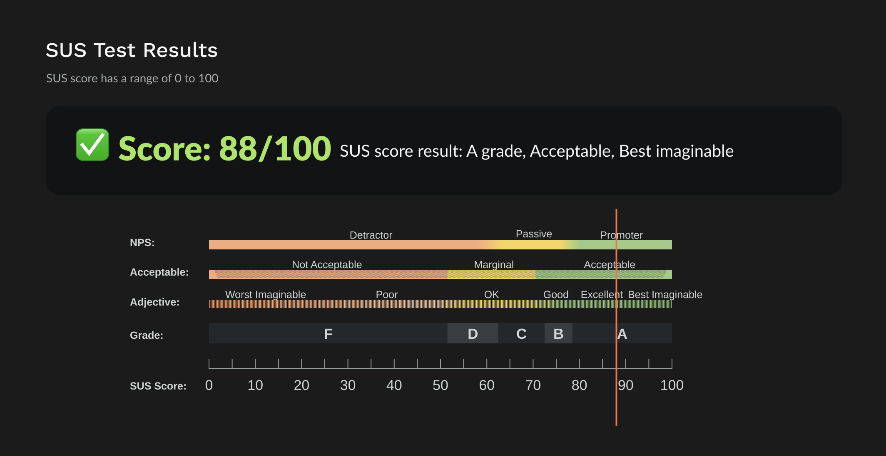
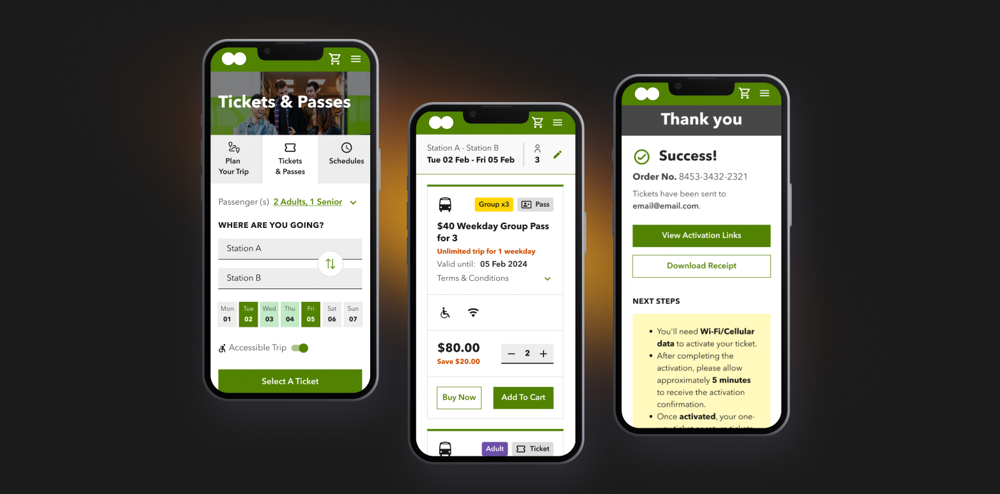

Discovery for a better Ticket Purchase
E-commerce · Discovery
* Client names and some visuals are anonymized under NDA.

About the Project
The client is a worldwide transportation company whose e-commerce site sells tickets and passes for rides. As ticket sales moved from a third-party platform to the company’s own site, the new purchase flow had to drive more purchases, higher satisfaction and more e-ticket sales. 80% of customers bought on mobile, and 70% of trips were one-day journeys.
I had the role of UX Researcher, so I ran a three-month discovery to find where and why people hesitate before buying. Instead of building on assumptions, the team got a concept validated with real users (SUS 88, grade A) and a prioritized list of fixes found before development, while they were still cheap to make.
My Role
I worked in a team with the Client’s Lead Researcher.
- Planned the discovery: research goals, methods and a pre-screening survey
- Wrote interview and usability testing scripts
- Co-ran interview and testing sessions
- Synthesized findings and turned them into prioritized recommendations
- Built the clickable prototype used for testing
- Presented results to product managers and stakeholders
Discovery Approach
-
Understand.
Reviewed requirements, the backlog and the current flow, and ran a UX audit to spot gaps.
-
Listen.
Interviewed real customers about how they buy tickets.
-
Validate.
Tested the new concept on a mobile prototype.
-
Align and rebuild.
Shared findings and recommendations with stakeholders.
Listening to Customers
We interviewed 5 regular customers aged 16+ who buy tickets daily, weekly or monthly, recruited through a pre-screening survey. Every session was recorded and transcribed, and I used affinity mapping to group what we heard into themes: website experience, difficulties, payment methods and fare information.

What We Learned
- Choosing the right ticket was the main source of hesitation: users found it hard to compare prices of e-tickets, passes and transit cards, and weren’t sure which option fit their trip.
- Mobile didn’t feel trustworthy enough to buy: some users switched to a laptop because the mobile flow felt less reliable and needed too many clicks, even though most of them start on their phones.
- Buying wasn’t the end of the journey: people often forgot to activate their e-ticket, and the activation wait felt stressful when they were rushing to catch a ride.
Validating the Concept
Based on these insights, the team created a new mobile purchase flow, and I built a clickable prototype to test it. We ran 5 sessions of 30 minutes, each with 7 tasks, to answer three questions: can people complete a purchase, where do they get stuck, and how do they choose between e-tickets and passes?

Most tasks were completed with ease. The only difficulties appeared at the very start of the flow, which became our first priority to fix before development.
After each session, participants filled in the System Usability Scale (SUS) questionnaire. The new concept scored 88 out of 100, grade A.

Why Mobile First
Since 80% of customers bought tickets on their phones, we designed and tested the concept on mobile first. Each screen kept one clear primary action, touch targets were comfortable to use on the go, and ticket selection was simplified, especially for one-day trips.

Outcome
- A validated purchase flow concept with a SUS score of 88 (grade A)
- Friction at the start of the flow found and addressed before development, when it was still cheap to fix
- Clear understanding of how users choose between e-tickets and passes, used to show the value of e-tickets in the design
- A development-ready design based on research, not assumptions
- Research became part of the process: a key stakeholder asked to run usability testing for other features too
Insights
Discovery turned a broad business goal, “increase conversion”, into specific questions we could answer with real users. Testing a mobile prototype before development helped us catch problems early, while they were still cheap to fix. Sharing findings openly with stakeholders also built trust in the process: research stopped being a one-off task and became a tool the team wanted to use again.